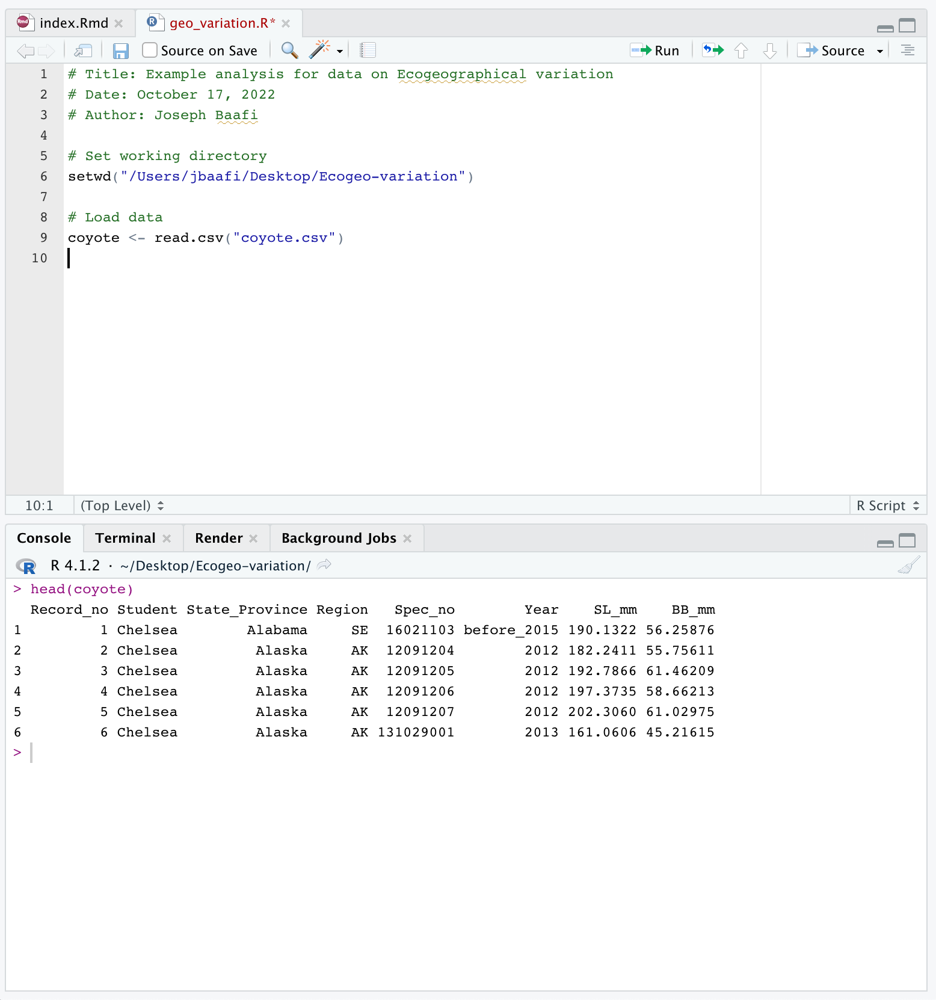

2 How to examine and analyze the data in R
2.1 Data importation and examination
To learn more about the codes being used in this section, we recommend you read through Chapters 8 and 9 of the Quantitative training guide where each line of code has been clearly explained.
Begin by making a folder on your D: drive (if you are working in a university computer lab), or on your Desktop (if you are working on your own computer), where you will work on this assignment.
Download the data from D2L and save it as a
.csvfile to the folder you made on the D: drive (or your Desktop). You may rename the.csvfile you downloaded ascoyote.csv.Open R Studio and save a new R Script. In the top menu select
File > New File > R Script, thenFile > Save As. Save the.R(the R Script) to the folder you made on your D: drive (or Desktop). It is very important to save both of these files in the same folder.Now you can load your data by running the following command:
coyote <- read.csv(file = "coyote.csv")The above command is essential to your analysis so you should add it to your R Script. Your R Script should look something like this:

The values in your dataset might look different from what I have in this dataset. Note that this is just a sample data to guide you through the analysis.
- You can explore the data using the following commands. This is an important practice to ensure that your data is loaded.
head(coyote)## Record_no Student State_Province Region Spec_no Year SL_mm
## 1 1 Chelsea Alabama SE 16021103 before_2015 190.1322
## 2 2 Chelsea Alaska AK 12091204 2012 182.2411
## 3 3 Chelsea Alaska AK 12091205 2012 192.7866
## 4 4 Chelsea Alaska AK 12091206 2012 197.3735
## 5 5 Chelsea Alaska AK 12091207 2012 202.3060
## 6 6 Chelsea Alaska AK 131029001 2013 161.0606
## BB_mm
## 1 56.25876
## 2 55.75611
## 3 61.46209
## 4 58.66213
## 5 61.02975
## 6 45.21615str(coyote)## 'data.frame': 120 obs. of 8 variables:
## $ Record_no : int 1 2 3 4 5 6 7 8 9 10 ...
## $ Student : chr "Chelsea" "Chelsea" "Chelsea" "Chelsea" ...
## $ State_Province: chr "Alabama" "Alaska" "Alaska" "Alaska" ...
## $ Region : chr "SE" "AK" "AK" "AK" ...
## $ Spec_no : num 16021103 12091204 12091205 12091206 12091207 ...
## $ Year : chr "before_2015" "2012" "2012" "2012" ...
## $ SL_mm : num 190 182 193 197 202 ...
## $ BB_mm : num 56.3 55.8 61.5 58.7 61 ...To list the names of the columns of the data:
names(coyote)## [1] "Record_no" "Student" "State_Province" "Region"
## [5] "Spec_no" "Year" "SL_mm" "BB_mm"Note that the commands to explore the data are good to run in the Console because we want to have a general knowledge of how the data looks like: These commands act as query rather than an essential part of the analysis.
- If your data has not loaded, the most likely problem is a spelling error or problems with specifying the path to
coyote.csv. You might try:
the RStudio way of importing your data, or
moving
coyote.csvto your working directory. To find out your working directory typegetwd()into your Console:
getwd()## [1] "/Users/jbaafi/Documents/Github/Ecogeographic-variation"For more help on resolving problems with loading data and setting your working directory you can read through section 2.1 of this study guide.